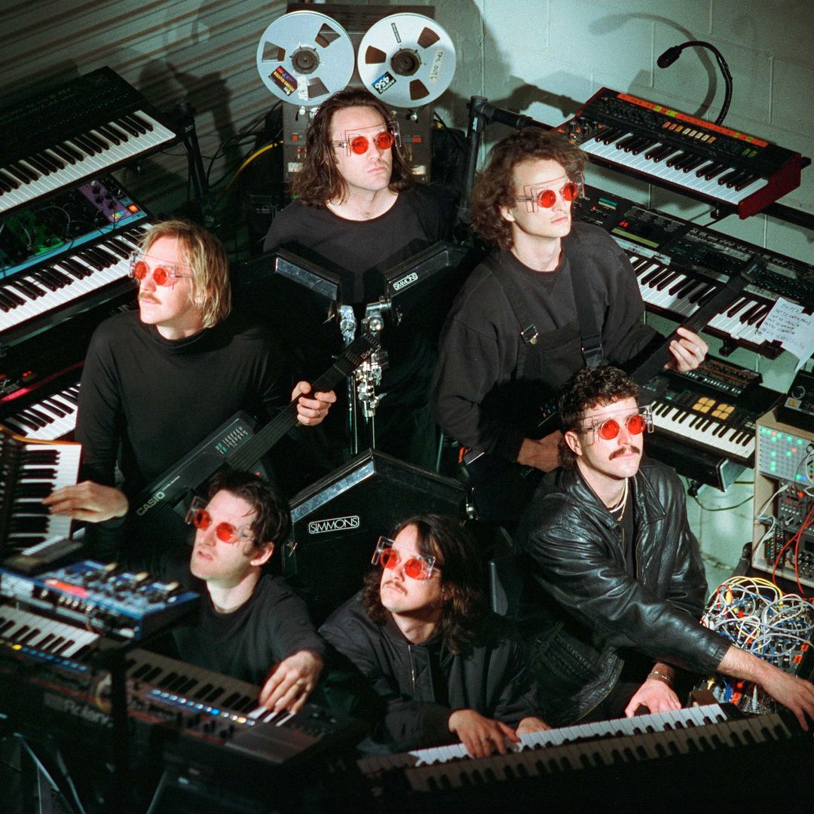

King Gizzard & The lizard Wizard
King Gizzard & the Lizard Wizard es un grupo australiano de rock psicodélico formado en Melbourne en el año 2010. La banda está formada por Stu Mackenzie (voz, guitarra, bajo, teclados, flauta, sitar), Ambrose Kenny-Smith (voz, armónica, teclados), Cook Craig (guitarra, bajo, teclados, voz), Joey Walker (guitarra, bajo, teclados, voz), Lucas Harwood (bajo, teclados) y Michael Cavanagh (batería, percusión). Son conocidos por explorar múltiples géneros, montar enérgicos conciertos y contar con una discografía prolífica, y han publicado 25 álbumes de estudio, 7 álbumes en vivo, 2 recopilaciones y 2 EP.
